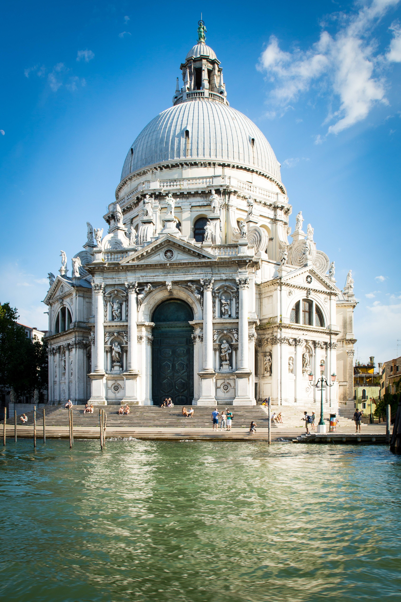
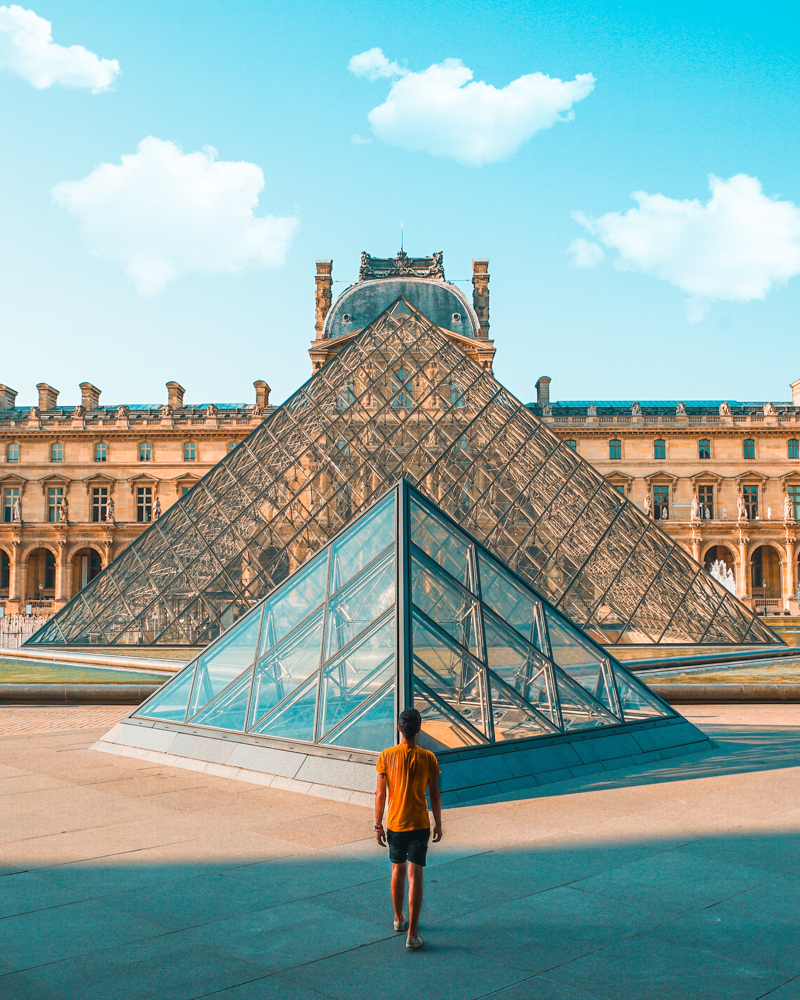
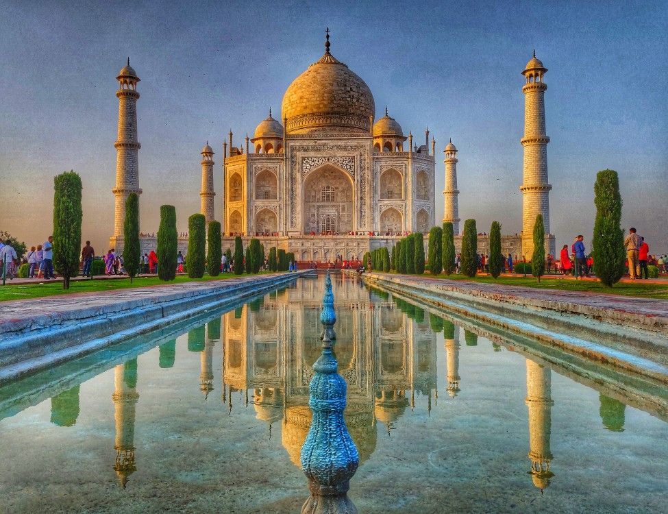

<!DOCTYPE html>
<html lang="en">
<head>
    <meta charset="UTF-8">
    <meta name="viewport" content="width=device-width, initial-scale=1.0">
    <title>crime</title>
    <link rel="stylesheet" href="./css/crime.css">

</head>
<body>
 
</body>
</html>


<!--<div class="grid container">
    <div class="grid-item grid-item-1">
     <header>
         <h1>MY Muse</h1>
     </header>
    </div>
    <div class="grid-item grid-item-2">
        <nav class="navbar navbar-dropdown navbar-fixed-top nav-expand-1g navbar-short">
           <div class="container">
               <div class="nav-brand">
                   <span class="navbar-logo">
                        <a href="#">
                             
                        </a>
                    </span>
                         <span class="navbar-caption-wrap"></span>
                </div>
                    <button class="navbar-toggler"type="button" data-toggle="collapse"></button>
           </div>
        </nav>
    </div>
     <div class="grid-item grid-item-3">
             <h1>PSYCHOLOGY</h1>
             <p id="paragraph1">
                 Psychology is the scientific study of human mind and behavior.The field of psychology encompasses a wide range of topics
                 that involve both theoretical research and practical applications.Its a diverse discipline with multiple subfields,each focusing
                 on different aspects of human behavior and mental processes.</p>
                 <br>
                 <p id="paragraph2 ">
                 "this is the course i going to do so if you need any psychological help....call me"
             </p>
         </div>
         <div class="grid-item grid-item-4">
             
             
         </div>
      <div class="grid-item grid-item5">
        <h2>FAVORITE CHARACTERS</h2>
          <p> 
             
                  vs 
             
           </p>
                 
                 
                 
                 
                 
                 
                 
                
      </div>
      <br>
       <div class="grid-item grid-item-6">
             <h1>Architecture</h1>
             
                <h2> The Beauty of Architecture</h2>
                 <p>
                 <br>
                 Architecture, often referred to as the art and science of designing and constructing buildings, is a testament to human creativity and ingenuity. It is more than just the arrangement of bricks and mortar; it is the embodiment of culture, history, and human aspirations. The beauty of architecture transcends the functional purpose of structures and extends into the realm of art, influencing our emotions and perceptions.
                 <br>
                 Architecture has the power to shape our experiences of spaces and places. Whether it's the grandeur of ancient temples, the symmetry of classical columns, or the sleek lines of modern skyscrapers, each architectural style carries its unique aesthetic appeal. The beauty of architecture lies not only in the visual aesthetics but also in the way it interacts with light, shadows, and the surrounding environment.
                 <br>
                 Throughout history, architecture has reflected the values, beliefs, and aspirations of societies. Majestic cathedrals and temples showcase religious devotion, while palaces and government buildings exude power and authority. The simplicity of minimalist design can evoke a sense of calm and tranquility, while intricate ornamentation can convey a rich cultural heritage. The beauty of architecture captures the essence of a time and place, offering a window into the past while inspiring future generations.
                 <br>
                 Architecture also holds the potential to create emotional connections. A well-designed building can elicit feelings of awe, inspiration, or even nostalgia. Consider the way a cozy cottage nestled in the countryside invokes a sense of warmth and comfort, or how a contemporary museum with its daring design can spark curiosity and wonder. The way architecture engages our senses and emotions demonstrates its ability to shape our perceptions of the world around us.
                 <br>
                 Moreover, architecture is a dynamic discipline that evolves with technological advancements and changing social contexts. Sustainable architecture, for instance, showcases the beauty of environmental harmony and responsible construction practices. The fusion of tradition and innovation in contemporary architectural designs reflects the complexity of our interconnected global society.
                 
                 </p>
                
                
                
                
                
                
                
                
                
                
                
                
           </div>
     </div>
 </div>
 <footer >
     <div class="footer-content">
         <p>&copy; 2023 startrek22 Name. All rights reserved.</p>
         <div class="social-icons">
             <a href="#"><i class="fab fa-facebook"></i></a>
             <a href="#"><i class="fab fa-twitter"></i></a>
             <a href="#"><i class="fab fa-instagram"></i></a>
         </div>
         <footer> -->